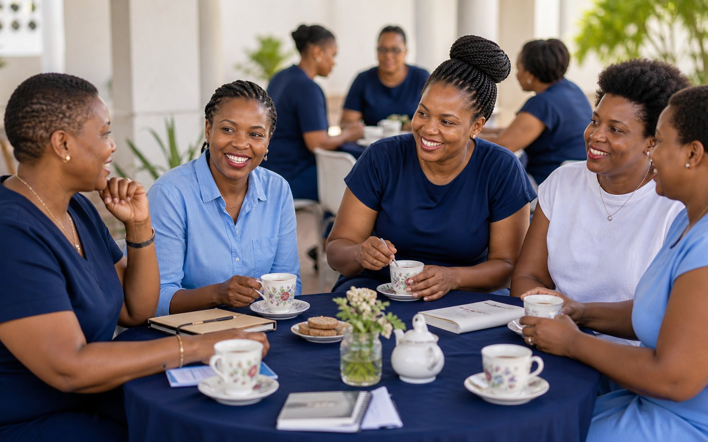
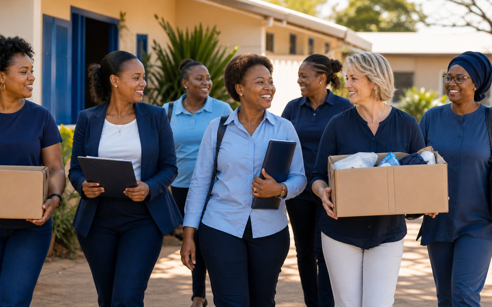
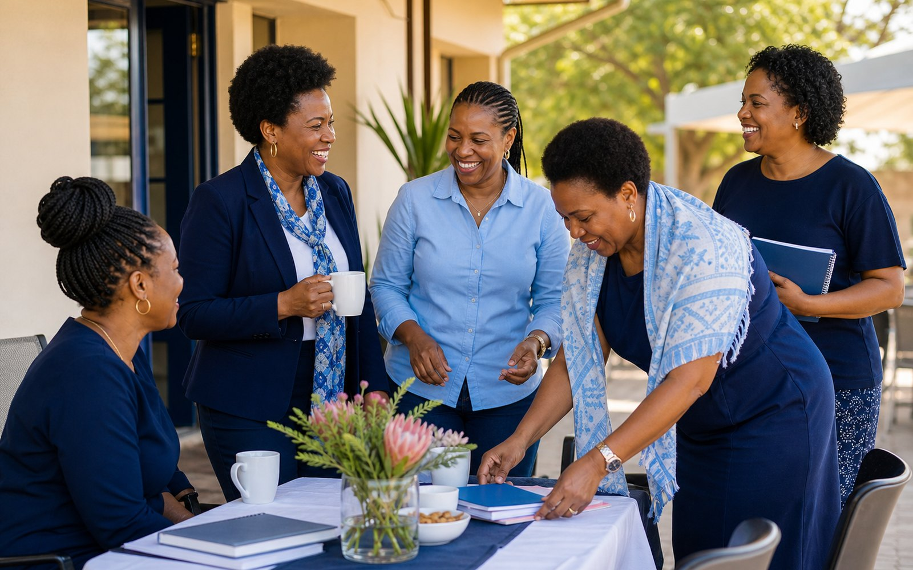
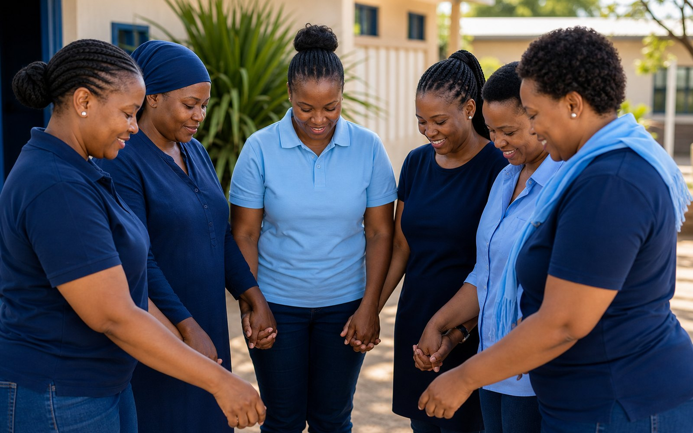
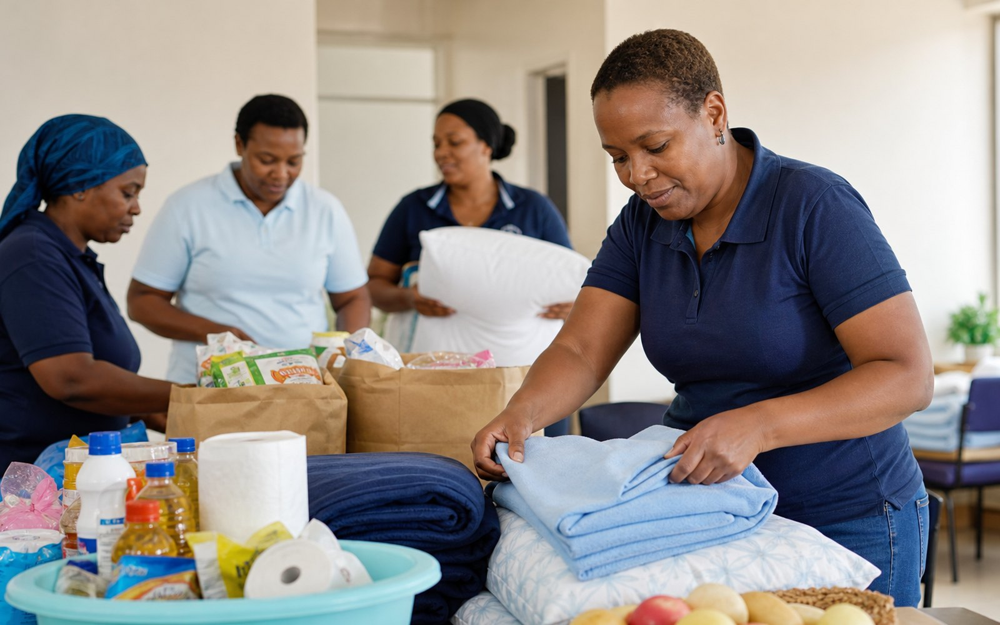
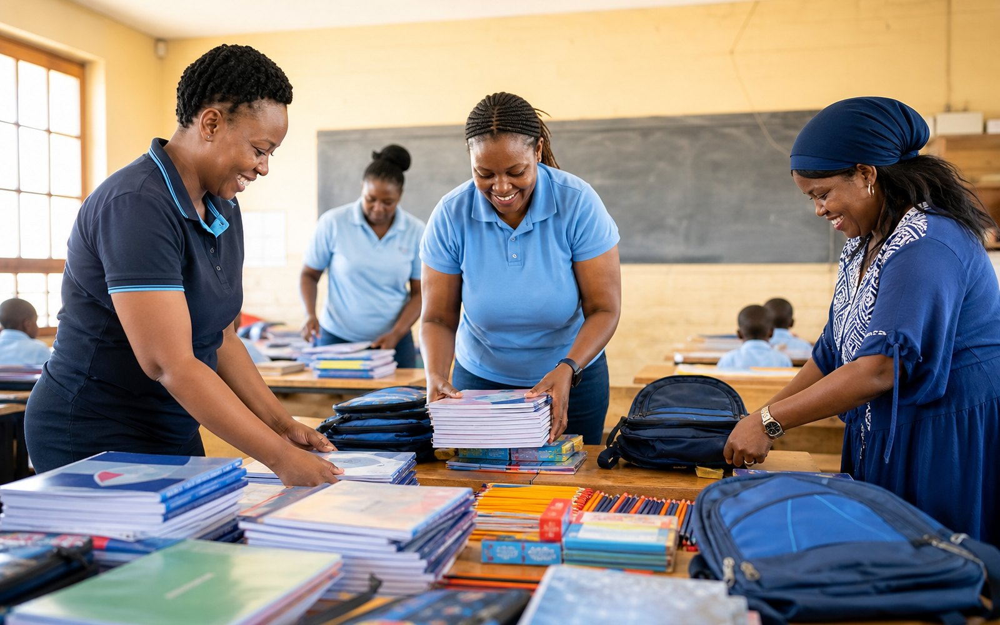
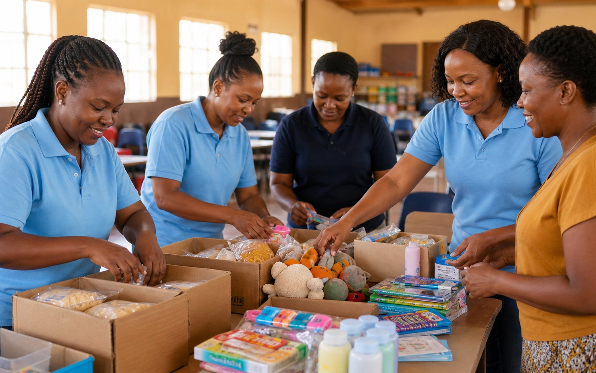
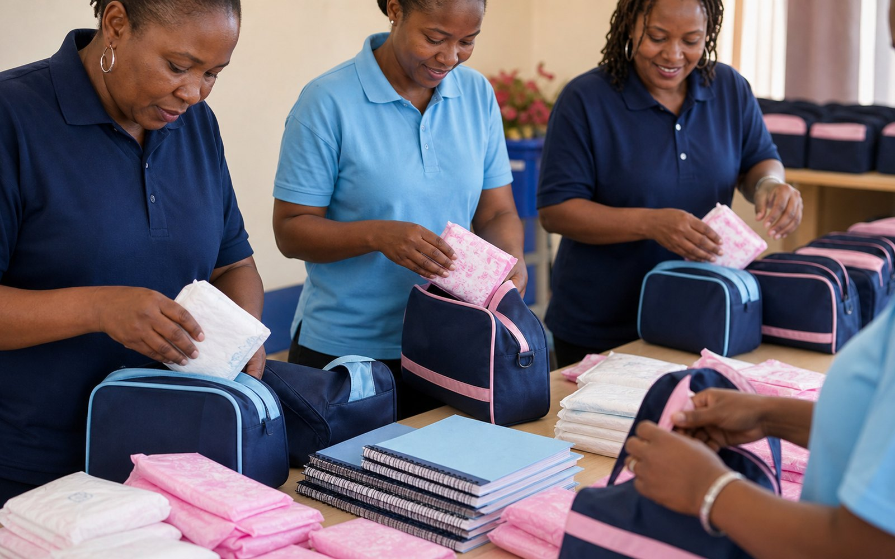
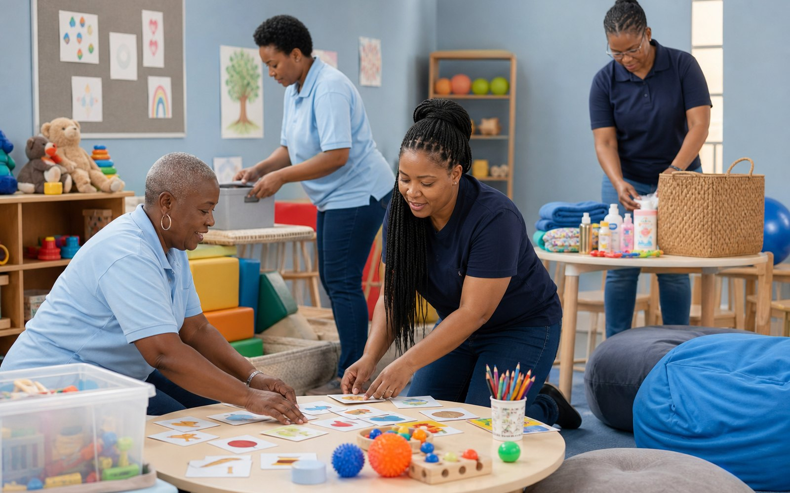

.png)

Friendship creates the energy behind the work.
Circle meetings and fellowships give members space to connect before they go back into the community.
Ladies Circle Botswana is a service association for women aged 18 to 45, bringing friendship into practical community action through fundraising, awareness, donations, and circle-led projects.
The motto is simple, but the work is broad: health, education, shelter, disability inclusion, youth support, fundraising, and hands-on service where communities need it most.
Ladies Circle began in England in 1930, became Ladies Circle International in 1959, and is now an independent global association.

Ladies Circle Botswana was formed in 1980. Today, its 32 members are organised into four circles: three in Gaborone and one in Francistown.
The Botswana association subscribes to the aims, objectives, and motto of Ladies Circle International. Members build friendship while financing and delivering service through private donations, hosted events, tea parties, merchandise, raffles, and partner support.
Every circle carries a project, giving the national network a practical footprint in schools, health services, family welfare, disability support, and community development.
Members do not only meet to fundraise. They build friendships, mentor one another, share ideas, and create the trust that keeps service work moving.

Circle meetings and fellowships give members space to connect before they go back into the community.


The national portfolio turns service into targeted support for children, learners, families, and centres doing essential care work.

National fundraising in support of Lorato House.

Fundraising support for the school in the Kgalagadi Region.

Fundraising in support of Kgodisong Center in Kanye.

Sanitary pad support for learners.

Support for a centre schooling children with special needs.
Ladies Circle Botswana has supported organisations and projects spanning cancer care, children, education, shelter, disability inclusion, drug-awareness work, and community feeding schemes.
LCB’s service work is funded through community generosity and circle-led fundraising. Every contribution helps turn a project brief into visible support on the ground.
For more information, contact National President Tafadzwa Chawafambira or connect with Ladies Circle Botswana online.